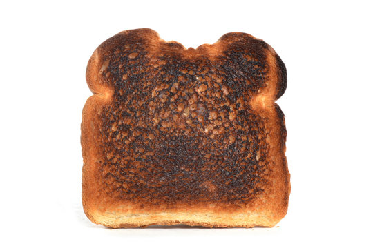

Toast

Well done sliced bread
Healthy, Yummy, Colorful
Ingredients
- 1 tablespoon of butter
- 1 slice of bread
Steps
- Heat pan to medium
- Butter both sides of the sliced bread
- Put slice of bread on pan
- Cook 10 min both sides or until chocolatey brown
- Serve with 2 glasses of water (it's kinda dry)